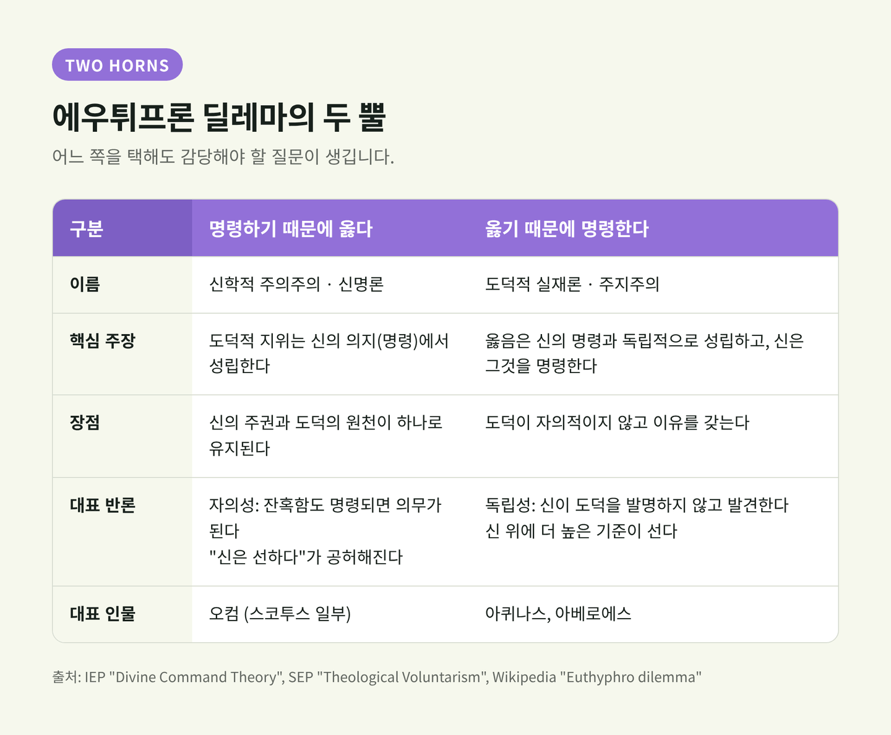
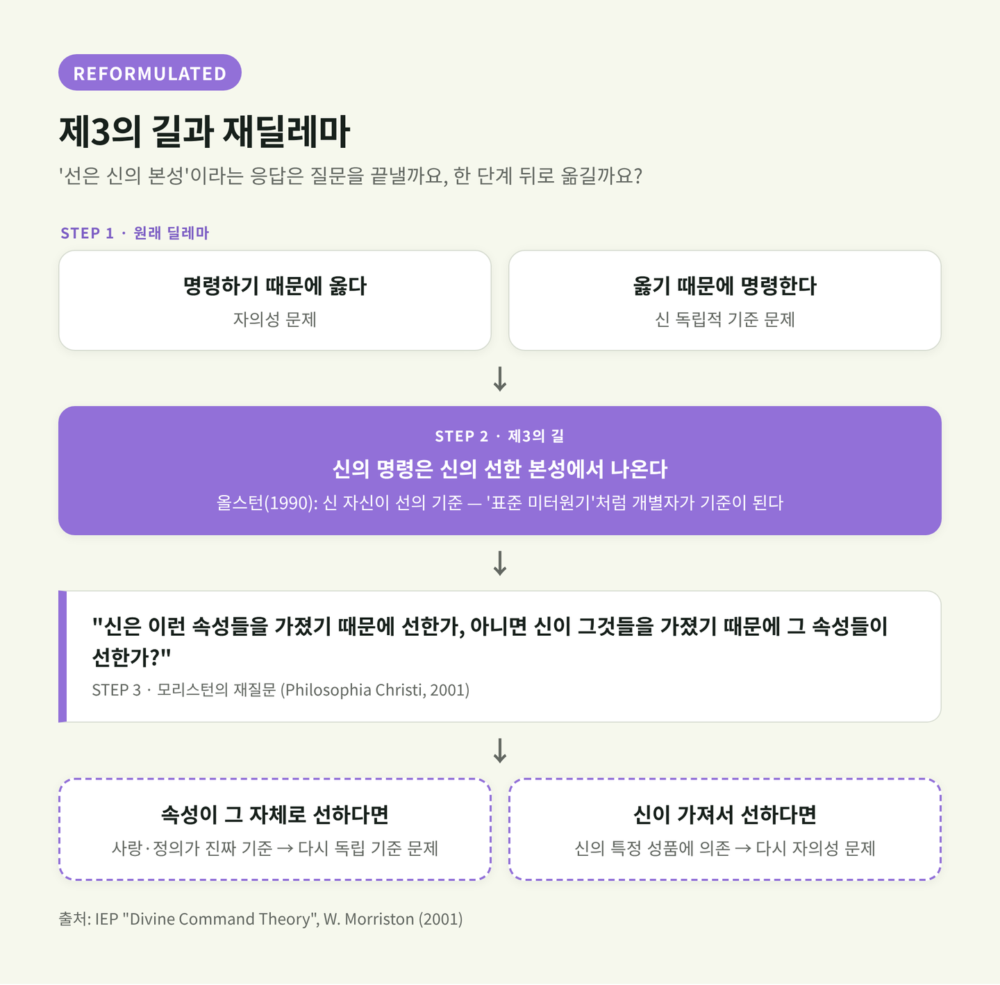

에우튀프론 딜레마 — 신이 명령해서 선한가, 선해서 명령하는가
이번 글에서는 윤리학에서 가장 오래 살아남은 질문 가운데 하나인 에우튀프론 딜레마를 정리해 보겠습니다. 플라톤의 대화편에서 시작해 중세 신학, 현대 신명론 논쟁을 거쳐 법과 조직의 규칙에까지 이어지는 흐름을 따라가 봅니다. 특정 신앙을 옹호하거나 비판하려는 글은 아닙니다.
먼저 요점부터 적어 둡니다.
- 원래 질문은 "경건한 것은 경건하기 때문에 신들에게 사랑받는가, 사랑받기 때문에 경건한가"였습니다(『에우튀프론』 10a).
- 앞쪽을 택하면 신과 독립된 도덕 기준이 생기고, 뒤쪽을 택하면 도덕이 자의적이 된다는 것이 딜레마의 핵심입니다.
- 같은 구조는 신을 빼도 남습니다. 규범의 근거가 '누가 정했는가'인지, '왜 옳은가'인지를 묻는 질문이기 때문입니다.
■ 기원전 399년, 법정 앞의 대화
무대는 기원전 399년 아테네입니다. 소크라테스는 멜레토스에게 불경죄로 고발당해, '왕 아르콘의 주랑' 앞에서 예비 심리를 기다리고 있었습니다. 몇 주 뒤면 그는 법정에 서야 했습니다.
그 자리에서 예언자 에우튀프론을 만납니다. 그는 자기 아버지를 고발하러 온 참이었습니다.
사건은 이렇습니다. 낙소스의 농장에서 일하던 피고용인이 집안 하인과 다투다 그를 죽였습니다. 아버지는 그 일꾼의 손발을 묶어 도랑에 던져 두고, 어떻게 처리할지 물으러 아테네로 사람을 보냈습니다. 사자가 돌아오기 전에 일꾼은 죽었습니다.
친척들은 아들이 아버지를 고발하는 것이야말로 불경하다고 반대했습니다. 에우튀프론은 자신이 경건한 일을 하고 있다고 확신했습니다. 소크라테스는 바로 그 확신을 붙듭니다. 그렇다면 경건함이란 무엇이냐고.
에우튀프론의 답은 몇 차례 바뀝니다. 처음엔 "지금 내가 하는 일"이라고 했다가, 이어서 "신들에게 사랑받는 것"이라고 정의합니다. 소크라테스가 신들끼리도 서로 다툰다는 점을 짚자, 다시 "모든 신이 사랑하는 것"으로 고칩니다. 문제의 질문은 이 세 번째 정의 앞에서 나옵니다.
■ 10a의 질문 — '운반되는 것'의 논리
소크라테스는 이렇게 묻습니다.
"경건한 것은 경건하기 때문에 신들에게 사랑받는가, 아니면 신들에게 사랑받기 때문에 경건한가?"
여기서 '경건한 것'은 그리스어로 토 호시온(to hosion), '신에게 사랑받는 것'은 토 테오필레스(to theophiles)입니다. 소크라테스가 드는 비유는 의외로 문법적입니다. 운반하는 것과 운반되는 것, 이끄는 것과 이끌리는 것, 보는 것과 보이는 것.
어떤 물건이 '운반되는 것'인 이유는 누군가 그것을 운반하기 때문입니다. 운반되는 것이라서 운반되는 것이 아닙니다. 마찬가지로 '신에게 사랑받는 것'은 신들이 사랑한다는 사실 때문에 그렇게 불립니다.
그런데 에우튀프론은 경건한 것이 경건하기 때문에 사랑받는다는 쪽에 동의합니다. 그러면 결론이 따라 나옵니다. '사랑받음'은 경건함을 설명하는 이유가 아니라, 경건한 것에 뒤따라 붙는 성질일 뿐입니다. 소크라테스의 말대로 두 가지는 "서로 다른 것"이 됩니다.
대화는 결론 없이 끝납니다. 에우튀프론은 바쁘다며 자리를 뜨고, 소크라테스는 경건함을 배울 기회를 놓쳤다며 반어적으로 탄식합니다. 기억해 둘 점이 하나 있습니다. 원래 질문은 여러 '신들'과 '경건함'에 관한 것이었습니다. 유일신과 도덕 일반에 관한 질문으로 바뀐 것은 후대의 일입니다.
■ 유일신의 질문이 되다 — 두 개의 뿔
라이프니츠는 18세기 초에 이 질문을 이렇게 옮겼습니다. "선하고 정의로운 것은 신이 그것을 원하기 때문인가, 아니면 신이 그것을 원하는 것은 그것이 선하고 정의롭기 때문인가." 현대 교과서의 표현도 거의 같습니다. 신은 옳기 때문에 명령하는가, 신이 명령하기 때문에 옳은가.
'옳기 때문에 명령한다'를 고르는 쪽은 도덕적 실재론, 또는 주지주의라고 부릅니다. '명령하기 때문에 옳다'를 고르는 쪽은 신학적 주의주의입니다. 스탠퍼드 철학 백과사전은 주의주의를 "어떤 것의 도덕적 지위가 신의 의지 행위 덕분에 성립한다"는 입장으로 정의합니다. 그 의지 행위를 '명령'으로 특정한 것이 흔히 말하는 신명론입니다.
두 선택지에는 각각 뿔이 달려 있습니다.
첫째 뿔은 자의성입니다. 옳음이 오직 명령에서 나온다면, 신이 잔혹함을 명령하는 순간 잔혹함은 의무가 됩니다. "신은 선하다"는 말도 공허해집니다. 선함이 곧 신의 명령이라면, 그 문장은 "신은 자기 명령에 맞는다"는 뜻에 불과하기 때문입니다. 라이프니츠는 이런 주의주의가 신을 악마와 거의 구별하지 못하게 만든다고 비판했습니다.
둘째 뿔은 독립성입니다. 신이 이미 옳은 것을 보고 명령한다면, 옳음의 기준은 신 바깥에 있습니다. 철학자 존 아서의 표현을 빌리면, 신은 도덕을 "발명하는 것이 아니라 발견하는" 셈이 됩니다. 그렇다면 신은 도덕의 원천이 아니라, 더 높은 법을 전달하는 존재가 됩니다.

■ 중세의 갈림길 — 아퀴나스와 오컴
중세 사상가들은 이 질문을 신의 지성과 의지 중 무엇이 앞서는가의 문제로 다뤘습니다.
토마스 아퀴나스는 대체로 첫째 뿔 쪽에 섭니다. 그에게 영원법은 모든 피조물을 질서 짓는 신의 이성적 계획입니다. 자연법은 이성을 가진 인간이 그 영원법에 '참여'하는 방식입니다. 제1원리는 단순합니다. 선은 행하고 추구해야 하며, 악은 피해야 한다. 생명, 출산, 앎, 사회 같은 기본선은 신이 창조한 인간 본성에 뿌리를 둡니다. 그래서 무엇이 인간을 완성시키는지를 신이 그때그때 임의로 바꿀 수는 없습니다. 아퀴나스는 십계명 역시 신도 바꿀 수 없다고 보았습니다.
그렇다면 신의 전능이 제한되는 것 아니냐는 반문이 나옵니다. 아퀴나스의 답은 이렇습니다. 죄짓는 것은 완전한 행위에 미치지 못하는 것이고, 그것은 오히려 전능과 어울리지 않는다.
반대편 끝에는 오컴의 윌리엄이 있습니다. 인터넷 철학 백과사전은 그를 "신의 의지가 옳고 그름을 정한다"고 본 신명론자로 소개합니다. 친절은 신이 명령했기 때문에 선합니다. 신은 늘 친절을 명령해 왔지만, 달리 명령하는 것도 가능합니다. 오컴은 신이 명령한다면 절도와 간음도 의무가 될 수 있다고 썼습니다. 더 나아가 신이 '신을 미워하라'고 명령할 수도 있다고 보았다고 전해집니다.
다만 오컴을 순수한 명령 이론가로만 읽기는 어렵습니다. 스탠퍼드 백과사전은 그가 자연 이성에 근거한 도덕학과 '덕 있는 이교도'의 가능성도 인정했다고 설명합니다. 2005년 오스본의 논문도 오컴을 신명론자로 읽으면서, 이 해석이 최근 학계에서 자주 부정된다는 점을 함께 밝힙니다.
두 사람 사이에 둔스 스코투스가 있습니다. 그는 신에 대한 의무는 자명하고 바뀌지 않지만, 이웃에 대한 의무는 신의 의지에 달려 있다고 보았습니다. 동시에 그 의무들이 자연법과 "매우 잘 조화된다"고 덧붙였습니다.
■ 애덤스의 수정 신명론
20세기 후반, 신명론을 다시 진지한 이론으로 끌어올린 사람이 로버트 M. 애덤스입니다. 1973년 논문 「윤리적 그름에 대한 수정된 신명론」이 출발점이었습니다.
그의 수정은 두 가지입니다.
하나는 범위를 좁힌 것입니다. 애덤스는 모든 가치를 신의 명령에 묶지 않았습니다. 명령에 의존하는 것은 의무와 그름의 영역뿐이고, 선함 자체는 명령과 독립적이라고 보았습니다.
다른 하나는 '사랑'이라는 조건입니다. 그의 정식은 이렇습니다. 어떤 행위가 그르다는 것은, 신이 우리를 사랑한다고 할 때 그 행위가 신의 명령에 반한다는 것이다. 나중에는 이것을 '물은 H₂O다'처럼 경험으로 알게 되는 필연적 동일성으로 설명했습니다.
그렇다면 사랑의 신이 잔혹함을 명령한다면 어떻게 될까요. 애덤스는 1979년에 그것이 논리적으로는 가능하지만 "생각할 수 없는" 일이며, 그런 상황이라면 신자의 옳고 그름 개념 자체가 "무너질" 것이라고 답했습니다. 1999년 저서 『유한한 선과 무한한 선』에서는 더 짧게 썼습니다. "신은 가학적일 수 없다."
이 응답의 장점은 분명합니다. 의무가 명령하는 권위와의 관계에서 생긴다는 직관, 곧 의무의 사회적 성격을 잘 살립니다. 한계도 지적됩니다. 물과 H₂O의 비유가 도덕 개념에는 잘 들어맞지 않는다는 비판이 있습니다. 물이라는 말을 쓰는 방식과 '그르다'는 말을 쓰는 방식이 같지 않다는 것입니다. 또 인간끼리 서로 책임을 묻는 관계만으로도 의무가 설명된다는 반론(윌렌버그, 2022)도 있습니다.
■ '선은 신의 본성'이라는 제3의 길, 그리고 재딜레마
많은 유신론 철학자는 딜레마 자체가 잘못 짜였다고 말합니다. 두 선택지 말고 세 번째 길이 있다는 것입니다. 신의 명령은 바깥 기준에서 오지도, 근거 없이 오지도 않습니다. 신의 선한 본성에서 흘러나온다는 것입니다.
윌리엄 올스턴은 1990년에 이를 '표준 미터원기'에 빗댔습니다. 한때 1미터는 원기라는 하나의 개별 물체를 기준으로 정해졌습니다. 마찬가지로 선함의 기준도 일반 원리가 아니라 신이라는 개별자일 수 있다는 것입니다. 설명은 어딘가에서 멈춰야 합니다. 원리에서 멈추든 인격에서 멈추든 자의적이기는 마찬가지라는 것이 올스턴의 논점입니다. 그는 이것이 "줄의 끝"임을 솔직히 인정했습니다.
철학자 에드워드 페서는 이를 한 문장으로 압축합니다. 신은 도덕법 아래 있지 않다. 그 자신이 도덕법이기 때문이다. 안셀무스와 아우구스티누스, 아퀴나스 역시 두 뿔을 모두 거부한 전통으로 읽힙니다.
비판은 같은 질문을 한 번 더 던지는 데서 시작합니다. 웨스 모리스턴은 2001년 논문에서 이렇게 묻습니다.
"신은 이런 속성들을 가졌기 때문에 선한가, 아니면 신이 그것들을 가졌기 때문에 그 속성들이 선한가?"
사랑과 정의가 그 자체로 선해서 신이 선하다면, 진짜 기준은 신이 아니라 그 속성들입니다. 반대로 신이 가졌다는 이유만으로 그 속성들이 선하다면, 처음의 자의성 문제가 되돌아옵니다.
모리스턴은 미터원기 비유도 문제 삼습니다. 원기는 '미터'라는 말이 무엇을 가리키는지 고정할 뿐, 길이의 참·거짓을 결정하는 조건에 들어가지는 않는다는 것입니다. 그는 "신이 존재하지 않는다면 누구도 선하거나 악할 수 없다"는 문장이 참이 되어야 한다는 점도 이 견해의 부담으로 꼽습니다. 흥미롭게도 모리스턴은 신의 본질적 선함에 호소하는 것이 신명론자에게 가장 나은 선택지라는 점은 인정합니다.

■ 신을 빼도 남는 질문 — 권위인가, 이유인가
이 딜레마가 종교철학 교실 밖에서도 읽히는 이유가 있습니다. '신'의 자리에 다른 권위를 넣어도 구조가 그대로 살아남기 때문입니다.
마이어스 맥두걸은 이렇게 물었다고 합니다. 그것이 재산권이라서 보호하는가, 우리가 보호하기 때문에 재산권인가. 제프리 호지슨도 국가가 관습을 법으로 만드는지, 국가의 승인으로 관습이 법이 되는지를 같은 방식으로 물었습니다.
권위 이론은 이 질문에 꽤 정교한 언어를 줍니다. H. L. A. 하트는 정당한 권위의 지시가 '내용 독립적 이유'라고 보았습니다. 지시가 무엇을 말하느냐가 아니라, 누가 어떤 형식으로 내렸느냐에서 의무가 나온다는 뜻입니다. 첫째 뿔의 "명령이니까"와 닮은 구조입니다.
조지프 라즈는 다른 쪽에 무게를 둡니다. 그의 '정상적 정당화 테제'에 따르면, 권위가 정당한 것은 그 지시를 따를 때 우리가 이미 가진 이유들을 혼자 판단할 때보다 더 잘 따를 수 있기 때문입니다. 권위는 이유에 '봉사'할 때 정당해집니다. 둘째 뿔의 "옳기 때문에"에 가까운 그림입니다. 그리고 로버트 폴 울프는 1970년에, 매번 스스로 판단해야 할 이성적 인간에게 내용과 무관한 복종은 자율의 포기라고 주장했습니다.
조직 생활에 대입해 보면 이해가 쉽습니다. "출장비는 반드시 사전 결재를 받는다"는 사내 규칙이 있다고 해 보겠습니다. 이 규칙을 지키는 이유가 "회사가 정했으니까"라면 첫째 뿔에 서 있는 셈입니다. "예산 낭비를 막고 책임 소재를 분명히 하니까"라면 둘째 뿔에 가깝습니다.
두 대답은 평소엔 구별되지 않습니다. 차이는 규칙이 이유와 어긋날 때 드러납니다. 급한 고객 대응 때문에 결재 없이 출장을 가야 하는 날, 앞의 대답은 멈추라고 하고 뒤의 대답은 규칙을 다시 보라고 합니다. 예전엔 규범의 근거를 묻는 일이 주로 신학의 몫이었습니다. 지금은 법정과 회의실에서도 같은 질문이 매일 다른 얼굴로 나옵니다.
정리하면 이렇습니다.
에우튀프론 딜레마는 정답을 고르는 문제라기보다, 자기 입장의 비용을 드러내는 장치에 가깝습니다. 명령을 근거로 삼으면 자의성의 질문을, 이유를 근거로 삼으면 권위가 왜 필요한가의 질문을 떠안게 됩니다. '신의 본성'이라는 제3의 길도 같은 질문을 한 단계 뒤로 옮긴다는 비판에서 자유롭지 않습니다. 어느 쪽이 결정적으로 이겼다고 말하기는 아직 어렵습니다.
그래도 이 질문이 2,400년 넘게 살아남은 데는 이유가 있다고 생각합니다. 규칙이든 계명이든, 따르기 전에 한 번쯤 그것이 '누가 정했기 때문에' 중요한지, '왜 옳기 때문에' 중요한지를 묻게 만들기 때문입니다.
"정한 사람이 누구인가"와 "왜 옳은가"는 다른 질문입니다.
소크라테스처럼 답을 얻지 못한 채 돌아서게 되더라도, 그 물음을 품고 돌아서는 편이 낫다고 저는 생각합니다.
참고자료
- Plato, Euthyphro, trans. Benjamin Jowett — Internet Classics Archive (MIT): https://classics.mit.edu/Plato/euthyfro.html
- Stanford Encyclopedia of Philosophy, "Theological Voluntarism": https://plato.stanford.edu/entries/voluntarism-theological/
- Internet Encyclopedia of Philosophy, "Divine Command Theory": https://iep.utm.edu/divine-command-theory/
- Wikipedia, "Euthyphro dilemma": https://en.wikipedia.org/wiki/Euthyphro_dilemma
- Wikipedia, "Euthyphro": https://en.wikipedia.org/wiki/Euthyphro
- Stanford Encyclopedia of Philosophy, "William of Ockham": https://plato.stanford.edu/entries/ockham/
- Internet Encyclopedia of Philosophy, "William of Ockham": https://iep.utm.edu/ockham/
- Thomas M. Osborne, "Ockham as a divine-command theorist," Religious Studies 41(1), 2005: https://www.cambridge.org/core/journals/religious-studies/article/ockham-as-a-divinecommand-theorist/5290CFE92DF267AF49133B8D3020E25A
- Stanford Encyclopedia of Philosophy, "The Natural Law Tradition in Ethics": https://plato.stanford.edu/entries/natural-law-ethics/
- Wes Morriston, "Must There Be a Standard of Moral Goodness Apart from God?", Philosophia Christi 3(1), 2001: https://spot.colorado.edu/~morristo/GodGood.pdf
- Stanford Encyclopedia of Philosophy, "Authority": https://plato.stanford.edu/entries/authority/
- Joshua J. Mark, "Plato's Euthyphro: An Overlooked Comedy," World History Encyclopedia, 2023: https://www.worldhistory.org/article/54/